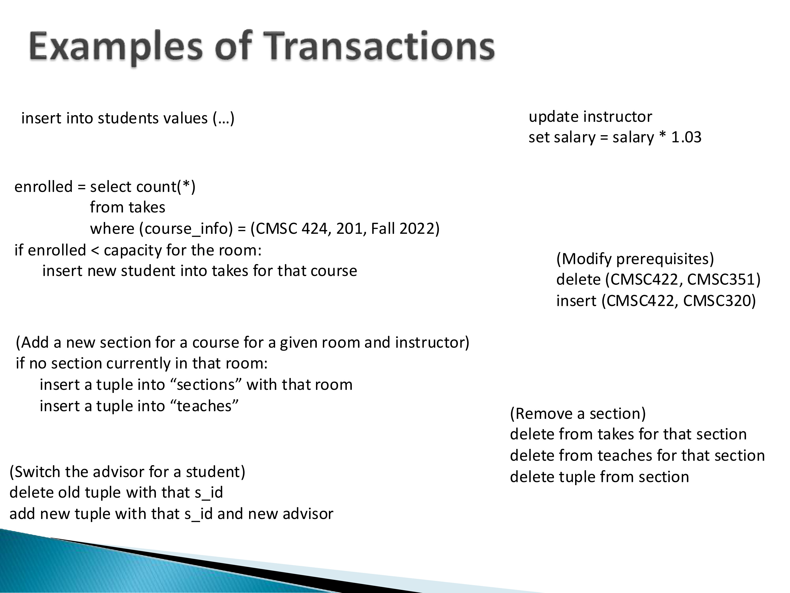
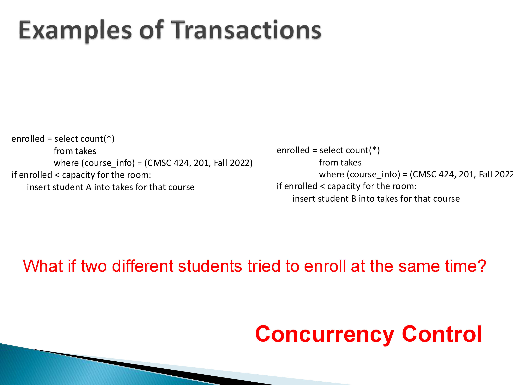
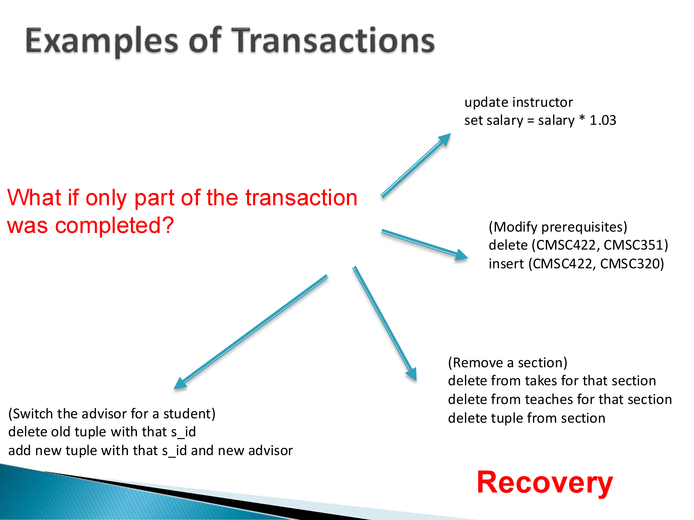
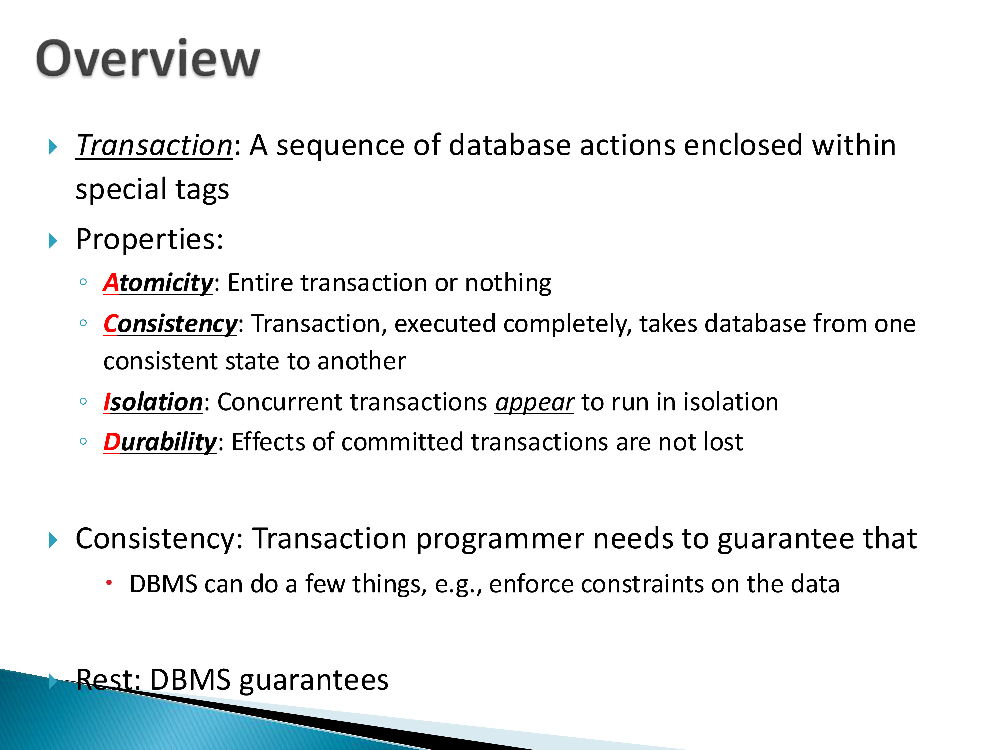
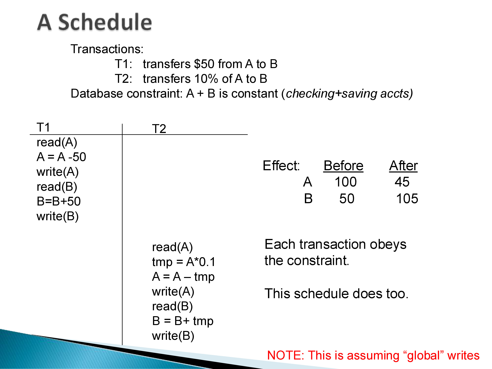
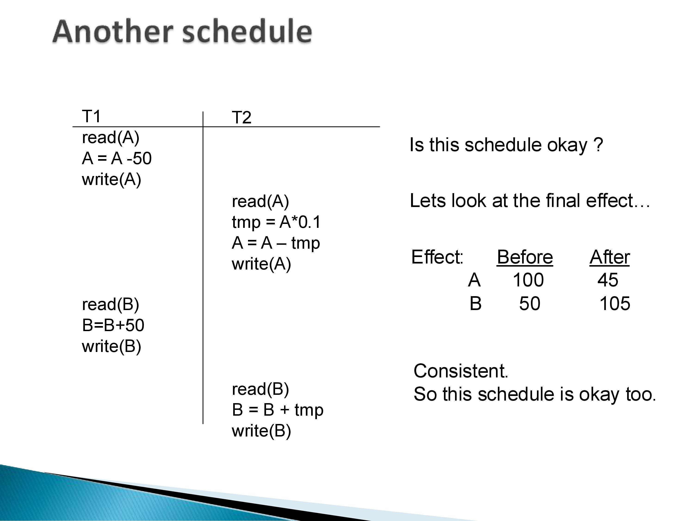
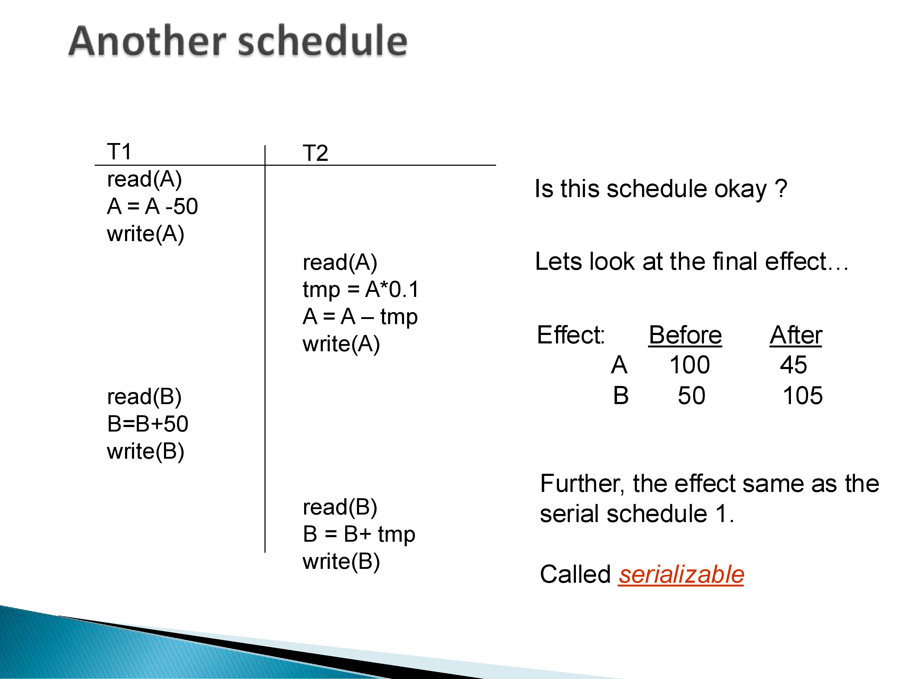
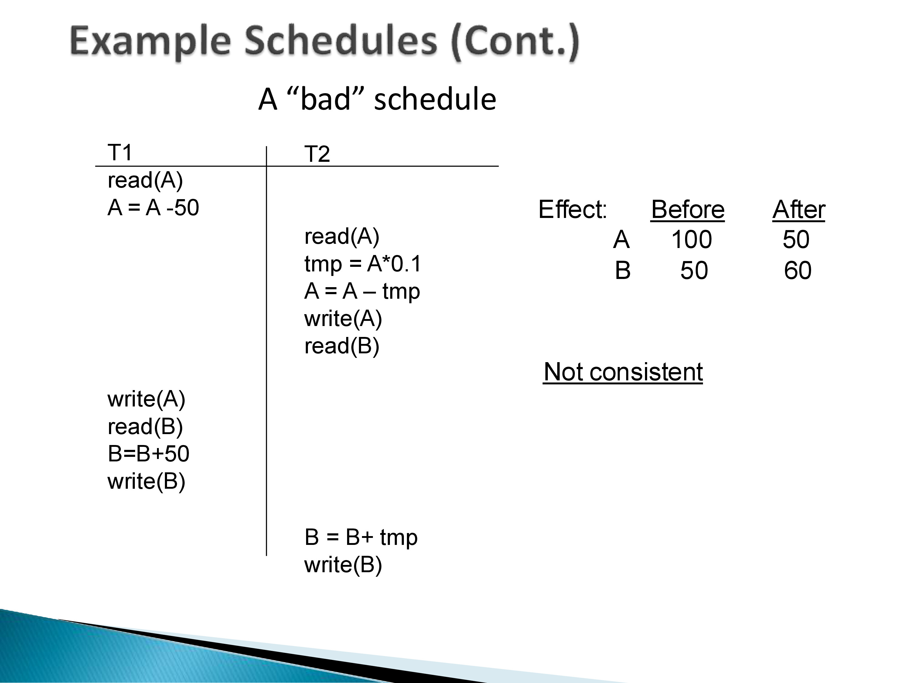
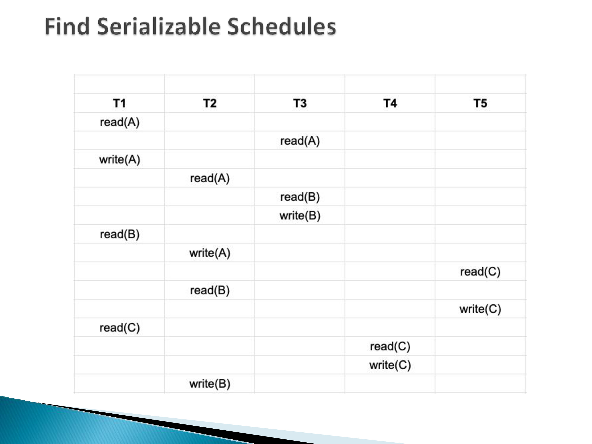

CMSC424: Transactions — ACID Properties and Serializability
Instructor: Amol Deshpande
1. What Is a Transaction?
A transaction is a sequence of database operations — reads and writes — that the database system treats as a single logical unit. Transactions are not just the simple single-row inserts most people think of first; they encompass the full range of work an application might ask the database to do.

Consider the variety of transactions that arise naturally in a university database:
INSERT INTO students VALUES (...)— a single-step transaction, trivially atomic.UPDATE instructor SET salary = salary * 1.03— a single SQL statement, but one that touches potentially thousands of rows across many disk blocks.- A course enrollment transaction: query the current enrollment count, check against the room capacity, and if space exists, insert the student into
takes. This combines a read, a conditional, and a write. - Modifying a course prerequisite: delete the old prerequisite row and insert a new one — two updates that must happen together.
- Removing a course section: delete from
takes, delete fromteaches, delete fromsection— three separate updates that are only meaningful as a unit.
The common thread is that each of these represents a coherent piece of work that is either done completely or not at all. The problem is that databases must support many such transactions executing simultaneously, and the underlying storage hardware — which can only write one page at a time — provides no native mechanism for multi-step atomicity.
2. Why Transactions Are Necessary
Two distinct problems arise when the database executes operations on behalf of multiple clients simultaneously.

The concurrency problem. Suppose two students simultaneously try to enroll in CMSC 424, Section 201. Each runs the same transaction: read the current enrollment count, check if it is less than the room capacity, and if so, insert a row into takes. With an enrollment of 49 and a capacity of 50, both transactions read 49, both pass the capacity check, and both insert — leaving the section with 51 students, one over capacity. This is a classic race condition. Allowing the two transactions to execute in strict sequence (one finishes entirely before the other begins) would prevent the problem, but serializing all transactions destroys the performance benefits of a multi-user database. The challenge is to permit interleaved execution while preventing incorrect outcomes.

The partial-failure problem. Consider removing a course section: the system must delete rows from takes, from teaches, and from section. If the system crashes or the transaction is interrupted after deleting from takes but before deleting from teaches, the database is left in an inconsistent state — entries in teaches refer to a section that no longer exists in section. The application programmer cannot prevent hardware failures. The database must provide a mechanism to ensure that either all three deletes happen or none of them do.
These two problems — concurrency and partial failure — motivate the formal guarantees that databases provide for transactions.
3. ACID Properties

The requirements that database systems must provide for transactions are captured by the acronym ACID, coined in the 1970s alongside a seminal 1975 paper that first laid out formal solutions to these problems.
Atomicity: a transaction executes entirely or not at all. If a transaction consists of ten operations and the system fails after the fifth, the database must undo the first five, leaving no trace of the partial work. The disk, which only supports writing one page at a time, does not provide this natively — the database must implement it on top of the storage layer.
Consistency: a transaction takes the database from one consistent state to another. Consistency in this context means that all declared constraints — primary keys, foreign keys, domain constraints — remain satisfied after the transaction commits. Importantly, consistency is the application programmer’s responsibility, not the database’s: if the programmer writes a transaction that violates a constraint, the database can enforce the constraint (and reject the transaction), but it cannot infer what the correct behavior should be. As noted in lecture, consistency was included in the acronym largely to make the acronym work; it describes an assumption about well-written transactions rather than a guarantee the DBMS provides autonomously.
Isolation: even when many transactions run concurrently, each one appears to run in isolation — as if it were the only transaction in the system. The intermediate states of one transaction are not visible to other transactions. Isolation is the guarantee that prevents the double-enrollment race condition described above.
Durability: once a transaction commits, its effects are permanent. A committed transaction must survive any subsequent system failure — crashes, power outages, disk errors. The classic example: a customer withdraws cash from an ATM, the transaction commits, and then the system crashes. When the system recovers, the withdrawal must still be reflected in the account balance. The bank cannot claim it never happened.
Of the four, atomicity, isolation, and durability are guarantees that the DBMS must provide. Consistency is shared between the application programmer (who writes correct transactions) and the DBMS (which enforces declared constraints).
4. Schedules
To reason formally about concurrent execution, we need precise vocabulary for describing the order in which operations from different transactions are interleaved. A schedule is a sequence of the primitive read and write operations issued by a set of transactions, in the order they actually execute on the database.
The primitive operations in a schedule are: - read(X): read the current value of data item \(X\) from the database into a local variable - write(X): write the transaction’s local value of \(X\) back to the database
Higher-level SQL statements decompose into these reads and writes. A transaction that transfers $50 from account A to account B consists of: read(A), compute A − 50, write(A), read(B), compute B + 50, write(B).
An important assumption: these read and write operations act directly on the shared copy of the data, not on a private snapshot. This is the “global writes” model shown on the slides. Some concurrency control techniques use private copies, but the baseline model operates on the live data.
4.1 Serial Schedules
A serial schedule is one in which transactions execute one at a time, with no interleaving: all operations of T1 complete before any operation of T2 begins, or vice versa.

Consider two transactions: - T1: transfers $50 from account A to account B - T2: transfers 10% of A’s balance to B
The database constraint is that A + B is constant (think of A as a checking account and B as a savings account). With initial values A = 100, B = 50, running T1 entirely before T2 gives A = 45, B = 105, which satisfies the constraint.
For any set of \(n\) transactions, there are \(n!\) possible serial schedules — each a valid ordering. Serial schedules are always correct by definition: no interference between transactions is possible. The problem is performance. A serial schedule means that while T1 is waiting for a disk read, T2 — which might not need the same disk block at all — is blocked waiting for T1 to finish. The CPU and disk sit idle. For a production database handling thousands of transactions per second, pure serial execution is completely impractical.
5. Serializability
The goal is to allow interleaved execution (for performance) while still producing results that are indistinguishable from some serial execution (for correctness). This is the concept of serializability.
5.1 A Good Interleaved Schedule


Consider the same two transactions T1 and T2, but now interleaved: T1 executes its first three operations (read A, compute A − 50, write A), then T2 executes its entire sequence, then T1 finishes with read B, compute B + 50, write B.
Working through the arithmetic: T1 writes A = 50. T2 reads A = 50, computes tmp = 5, writes A = 45, reads B = 50, writes B = 55. Then T1 reads B = 55 and writes B = 105. Final state: A = 45, B = 105.
This is exactly the same final state as the serial schedule T1 → T2. The constraint A + B = 150 is satisfied. This interleaved schedule is serializable: its effect is identical to the effect of one of the serial schedules.
5.2 A Bad Schedule

Now consider a different interleaving: T1 reads A and computes A − 50 but has not yet written A. T2 then runs its full sequence — reading the original A = 100, computing 10% = 10, writing A = 90, reading B = 50, writing B = 60. Now T1 resumes: it writes A = 50 (overwriting T2’s update to A), reads B = 60, and writes B = 110.
Final state: A = 50, B = 110. But 50 + 110 = 160 ≠ 150. The constraint is violated. This schedule is not serializable: its effect does not match any serial schedule (both serial schedules produce a sum of 150). The interleaving allowed T2’s write to A to be silently overwritten by T1 — the classic lost update anomaly.
6. Testing for Serializability: The Precedence Graph
Given an arbitrary interleaved schedule, how do we determine whether it is serializable? Working out the full arithmetic for every possible schedule is infeasible in practice. The standard theoretical tool is the precedence graph (also called the conflict graph or serialization graph).
6.1 Conflicting Operations
Two operations from different transactions conflict if they both access the same data item and at least one of them is a write: - read(X) and write(X) from different transactions conflict - write(X) and read(X) from different transactions conflict - write(X) and write(X) from different transactions conflict - read(X) and read(X) do not conflict — reading the same value simultaneously is always safe
The order of conflicting operations cannot be freely swapped without potentially changing the outcome. The order of non-conflicting operations can be swapped freely.
6.2 Building the Precedence Graph
Draw one node per transaction. For every pair of conflicting operations from transactions \(T_i\) and \(T_j\) where \(T_i\)’s operation appears before \(T_j\)’s operation in the schedule, draw a directed edge \(T_i \to T_j\). This edge means: in any equivalent serial schedule, \(T_i\) must appear before \(T_j\).
The reasoning is straightforward: if \(T_i\) writes X and then \(T_j\) reads X, then \(T_j\) observed a value produced by \(T_i\). Reversing their order in the serial schedule would make \(T_j\) read a different value of X — producing a different result. So the serial schedule must have \(T_i\) before \(T_j\).
A schedule is serializable if and only if its precedence graph has no cycles.
A cycle means two transactions each depend on the other coming first — an impossible requirement to satisfy in any serial ordering.
6.3 Example: The Bad Schedule
In the bad T1-T2 schedule from above, we can read off the conflicts: - T2 writes A; then T1 writes A (overwriting T2). The read of A by T2 happened when T1 had not yet written. Actually, more precisely: T1 reads A (original value), T2 reads A (original value), T2 writes A — so T2’s write(A) comes after T1’s read(A), meaning T1 must come before T2. But also T2 writes A and then T1 writes A — the write-write conflict means T2 must come before T1. Both T1→T2 and T2→T1 edges appear, forming a cycle. The schedule is not serializable.
In contrast, the good interleaved schedule (T1 writes A, then T2 reads A — a single read-after-write dependency) produces only a T1→T2 edge, no cycle, confirming serializability.
6.4 A Larger Example

The slide shows a schedule involving five transactions T1–T5 operating on data items A, B, and C. Reading off the conflicts:
- T1 writes A; T2 reads A after → edge T1 → T2
- T3 reads A; T1 writes A after → edge T3 → T1
- T5 writes C; T4 reads C after → wait, T5 reads C and writes C; T4 reads C and writes C — T5 write(C) before T4 read(C) → edge T5 → T4
- T1 reads B; T2 writes B after → edge T1 → T2 (already have this)
- T3 writes B; T1 reads B — T3 write(B) before T1’s later read? Looking carefully at the schedule…
Working through the full graph, we get edges that encode the ordering constraints. If no cycle exists, the schedule is serializable and the topological sort of the graph gives an equivalent serial schedule. If a cycle exists, the schedule is not serializable.
This graph-based test — checking for cycles in the precedence graph — is the theoretical foundation on which practical concurrency control algorithms are built. As the instructor noted, this is a conceptual tool for understanding the space of valid schedules and for designing algorithms that guarantee serializability, not a mechanism that production systems apply to every schedule after the fact.
7. Summary
Transactions bundle sequences of database operations into coherent units that must satisfy four guarantees — Atomicity, Consistency, Isolation, and Durability. Atomicity and durability address failures; isolation addresses concurrency. Consistency is largely the application programmer’s responsibility, enforced at the boundaries by constraint-checking.
The formal framework for reasoning about concurrent transactions:
- A schedule is the actual sequence of read/write operations issued by all concurrent transactions.
- A serial schedule — one transaction at a time — is always correct but too slow for production systems.
- A schedule is serializable if its final effect is identical to the effect of some serial schedule. Serializability is the gold standard for correctness of concurrent execution.
- The precedence graph test: draw a directed edge \(T_i \to T_j\) for each conflicting operation pair where \(T_i\)’s operation comes first. The schedule is serializable if and only if the graph is acyclic.
The next set of notes covers how databases actually enforce serializability in practice, through concurrency control mechanisms — primarily locking protocols.